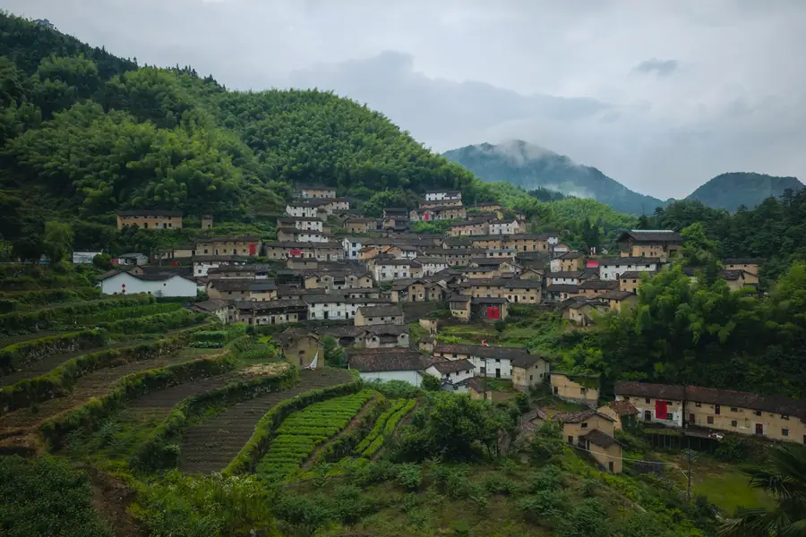
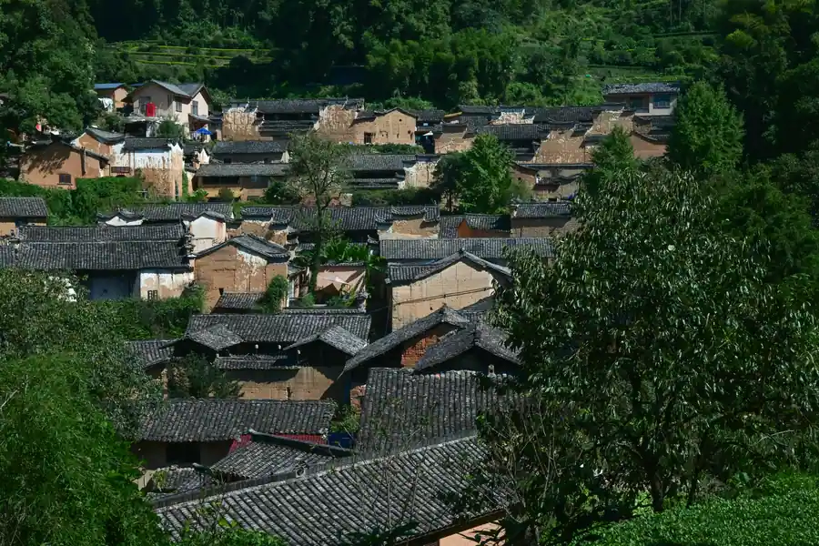
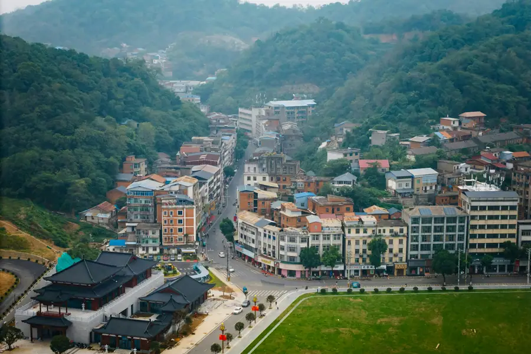

Yongchuan Airport Transfer & Private Car
Chongqing Jiangbei Airport (CKG) to Yongchuan with licensed professional driver. Fixed price, free flight tracking. Explore Chongqing's tea country and Jinyun Mountain.
Yongchuan in Pictures
Real scenes from Yongchuan — landmarks, streets and everyday life.



Yongchuan at a Glance
A satellite district of Chongqing Municipality, Yongchuan is known as Chongqing's "Tea Capital," a higher education hub, and the gateway to the scenic Jinyun Mountain nature reserve.
Name Origin
The name "Yongchuan" (永川) means "Eternal River" — a reference to the area's abundant water resources. The district has been an important settlement for over a thousand years, sitting at the confluence of rivers flowing down from the surrounding hills. Today it is one of Chongqing's most dynamic suburban districts, balancing its agricultural heritage with a growing university town and industrial base.
Tea Capital of Chongqing
Yongchuan is known as the Tea Capital of Chongqing (重庆茶都). The district produces tea from extensive plantations on the surrounding hillsides, particularly the famous Yongchuan Xisha (永川秀芽) — a prized green tea known for its delicate, sweet flavor and tender leaves. Tea culture is woven into daily life here, and visitors can tour tea plantations and participate in tea-picking experiences.
Higher Education Hub
Yongchuan is home to 7 universities with a combined enrollment of over 200,000 students, making it one of Chongqing's most youthful districts. The university town has brought a lively café culture, bookstores, and a modern commercial district that contrasts with the traditional market town at Yongchuan's historic core.
Geography & Nature
Yongchuan sits in the southwestern part of Chongqing Municipality, bordered by the Jinyun Mountains (缙云山) to the north — a dramatic range of forested limestone peaks that form part of the Sichuan-Guizhou Basin's natural boundary. The district's terrain is a mix of river valleys, rolling hills, and tea-covered slopes. Jinyun Mountain is only 8 km from the city center, making it a beloved weekend escape.
Yongchuan's Best Photo Spots
Capture Chongqing's tea country and mountain scenery from its most photogenic angles.
🏔️ Jinyun Mountain Summit
Best at sunrise or in mist
The summit of Jinyun Mountain offers sweeping views over the Chongqing basin and the forested peaks of the Sichuan-Guizhou border. On clear mornings, the view extends for miles. In cloudy weather, the mountain peaks emerge above the sea of white mist — a classic Chinese landscape painting scene.
🍵 Tea Plantation Rows in Spring
Best in March–April
The geometric rows of tea bushes on Yongchuan's hillside plantations are most photogenic in early spring when the tender new leaves are bright green. The contrast of the green tea rows against the brown earth paths and the distant forested mountain is striking.
🌊 Huaxi Wetland Park at Dusk
Best at sunset
The lake at Huaxi Wetland Park reflects the golden sky at sunset, with the willow trees and pavilion silhouettes mirrored in the still water. The park's boardwalks and bridges make ideal foregrounds for wide landscape shots.
🌉 Heishijiao Bridge in Morning Mist
Best at dawn
The ancient stone arch bridge covered in morning mist, with the river flowing beneath and tea vendors setting up on the banks. The scene captures the timeless quality of rural Chongqing life — especially beautiful in autumn when the air is cool and crisp.
🐼 🎋 Panda Base Bamboo Grove
Best any time of day
The towering bamboo groves at the panda base are as photogenic as the pandas themselves. The filtered green light through the bamboo canopy, with a panda in the foreground, makes for a memorable shot. Early morning is best for panda activity.
🛕 🏙️ University Town Night View
Best at night
The Yongchuan University Town district is modern and well-lit at night, with the university buildings, commercial streets, and the lake at the center creating an atmospheric urban nightscape. The Science Museum's illuminated facade is a focal point.
Top Yongchuan Attractions
From historic sites to local flavours, here is what Yongchuan is known for.
Popular Yongchuan Routes
Fixed-price private car service for Yongchuan's most popular journeys.
🌊 CKG Airport → Yongchuan District
From ¥229($32.25)~100 km · 90–120 min · Economy/Business/MPV
Chongqing Jiangbei International Airport (CKG) is the main international gateway for the Greater Chongqing area. Yongchuan is about 100 km southwest of the airport — too far for taxi or public transit to be practical. Your driver meets you at arrivals with a name board and drives directly to your Yongchuan hotel.
🌊 Yongchuan Railway → Hotel
From ¥229($32.25)~5–15 km · 20–35 min · Economy/Business/MPV
Yongchuan North Railway Station has high-speed rail to Chongqing (25 min), Chengdu (1.5h), Guiyang (2h), and other major southwestern cities. Your driver waits at the station exit with your name, tracking your train for any delays.
⛰️ Jinyun Mountain Day Trip
From ¥229($32.25)~15 km · 5–7 hours · Business vehicle
Your private car takes you to Jinyun Mountain, one of Chongqing's most scenic natural areas. Visit the ancient temple at the summit, hike the forest trails, and enjoy the panoramic views over the Sichuan-Guizhou basin. The driver waits while you explore.
🗼 Tea Plantation Experience
From ¥546($76.9)~20 km · 4–6 hours · Business vehicle
Visit the Yongchuan tea plantations on the hillsides surrounding the district. Your driver can arrange a visit to a working tea farm where you can pick leaves, watch the tea-making process, and taste the famous Yongchuan Xisha green tea. Best in spring.
Transparent Pricing in Yongchuan
Published rates, no estimate games. Check the numbers yourself before you book — and the price you see is the price your driver is paid from.
Fixed Price List — 永川 (Yongchuan)
Published rates from our 2026 quote sheet. Renminbi first, USD for reference at 1 USD = ¥7.10. Every price below already includes tolls, parking, driver service and free airport waiting time (up to 60 minutes after your flight lands) — nothing is added on the day.
🛬 Airport & Intercity Transfer
One flat fare for airport pickup, drop-off or city-to-city — intercity costs the same as the airport run. 35 km and 60 minutes included; beyond that we charge by the minute and the kilometre at the rates shown.
| Vehicle | Seats | Bags | Fixed fare | USD | Beyond 35 km / 60 min |
|---|---|---|---|---|---|
| 4座 经济型专车 | 4 | 2 | ¥229 | ≈ $32.25 | ¥1.22/min · ¥5.3/km |
| 4座 舒适型专车 | 4 | 2 | ¥328 | ≈ $46.2 | ¥1.34/min · ¥5.87/km |
| 6座 商务车 | 6 | 3 | ¥418 | ≈ $58.87 | ¥1.43/min · ¥6.24/km |
| 8-11座 商务车 | 11 | 4 | ¥655 | ≈ $92.25 | ¥1.86/min · ¥8.11/km |
| 12-18座 商务车 | 18 | 4 | ¥796 | ≈ $112.11 | ¥2.07/min · ¥9.05/km |
| 19-55座 大巴 | 55 | 5 | ¥983 | ≈ $138.45 | ¥2.36/min · ¥10.3/km |
🚗 Hourly Private Charter
Book the car and the hours, keep the car for the day. Unused kilometres can be carried into the next tier, so a long day never turns into a penalty. The driver stays with you — you set the stops.
| Vehicle | 2h / 35km | 4h / 50km | 6h / 75km | 8h / 100km | 10h / 125km |
|---|---|---|---|---|---|
| 4座 专车 | ¥273 | ¥455 | ¥546 | ¥663 | ¥819 |
| 6座 商务车 | ¥351 | ¥598 | ¥715 | ¥858 | ¥1066 |
| 8-11座 商务车 | ¥505 | ¥861 | ¥1030 | ¥1236 | ¥1535 |
| 12-18座 商务车 | ¥607 | ¥1033 | ¥1236 | ¥1483 | ¥1842 |
| 19-55座 大巴 | ¥728 | ¥1240 | ¥1483 | ¥1779 | ¥2210 |
Why travellers book Yongchuan with Chinawheely
Six things you get with every booking — in Yongchuan and across all 346 cities on the platform.
Licensed travel agency, not a ride-hail app
Chinawheely is a registered travel agency (L-HUB-101603). Your booking is a travel contract with a licensed operator — not a broker handing your number to whoever answers the phone.
One locked price, shown before you pay
The price you see is the price you pay. Tolls, parking, driver service and airport waiting time are already inside it. No surge pricing, no meter, no cash-on-the-day surprise.
Flight tracked, waiting time on us
We watch your flight number in real time. If it lands late or is delayed, your driver shifts with it and the waiting time stays on us — not on your bill.
A licensed driver who knows the city
Every car is driven by a professional local driver who knows the routes, the shortcuts and the parking that actually works near the attractions — with English communication and a name board on arrival.
Free changes up to 48 hours before
Plans move. Reschedule or cancel any booking free of charge up to 48 hours before your scheduled pickup, straight from your confirmation link.
A real human on WhatsApp, 8AM–12AM Beijing time
One message reaches a person who can re-price, re-route or re-plan your trip on the spot. No ticket queue, no chatbot loop.
Book Yongchuan at the published price
Pick your vehicle, see the fare line by line, and pay by PayPal or Alipay. Free changes up to 48 hours before pickup — or ask on WhatsApp and we will hold a car for you.
The quote is valid for 48 hours, and you can change or cancel free up to 48 hours before pickup.
Getting to Yongchuan: Airports & Railway Stations
Getting to Yongchuan by air, rail, or road
✈️ Airport
🛶 Chongqing Jiangbei International Airport (CKG)
~100 km northwest of Yongchuan · 90–120 min by car
CKG is one of China's busiest airports and the main international gateway for Chongqing and the greater southwestern region. It has three terminals and serves domestic flights across China plus international routes to Southeast Asia, Europe, North America, and Australia. Yongchuan is too far for public transit — a private car is the most practical and comfortable option. Your driver meets you at the arrivals hall with a name board and helps with luggage.
🏯 Need an Airport Pickup?
We meet you at the exit with a name board and help with luggage.
Book Airport Transfer🚄 Railway Stations
🌊 Yongchuan North Station (永川北站)
High-speed rail · Southwest China connections
The main railway station in Yongchuan, serving high-speed G/D trains to Chongqing (25 min), Chengdu (1.5h), Guiyang (2h), and other major cities in the Chengdu-Chongqing economic zone. The station is modern and well-organized. Pre-book your car to avoid taxi queues.
🌊 Yongchuan Station (永川站)
Conventional trains · Regional routes
The older main station serving conventional (non-high-speed) trains on regional routes within Chongqing Municipality and to neighboring provinces. Less busy than Yongchuan North Station. A private car is the best option for a smooth transfer to your hotel.
🌊 Yongchuan East Station (永川东站)
Newer station · Growing district
A newer station serving the rapidly developing eastern part of Yongchuan District. Primarily handles commuter-style rail services within the Chongqing metropolitan area. Convenient if your hotel is in the eastern district.
Food & Shopping in Yongchuan
🍽️ Must-Try Yongchuan Cuisine
Yongchuan Xisha Tea (永川秀芽)
The district's most famous export — a premium green tea with a delicate, sweet flavor and fresh vegetative notes. Best drunk plain, in a glass teapot with hot water, to appreciate its clarity and fragrance. Visit a tea house or plantation to try it fresh from the source.
Spicy Chongqing Hotpot
No visit to Chongqing is complete without hotpot — and Yongchuan's version is just as fiery and flavorful as the city itself. The signature malas (numbing-spicy) broth with bullfrog, duck intestine, and local vegetables is a local favorite. Your driver can recommend a reputable restaurant.
Sichuan Noodles (担担面)
Hand-pulled or pressed wheat noodles in a spicy Sichuan pepper and soy sauce base, topped with minced pork, pickled vegetables, and fresh herbs. Found at local noodle shops throughout the district. A hearty, affordable breakfast.
Yongchuan Pickled Vegetables (永川泡菜)
The district's signature pickled vegetables — radish, cabbage, and cucumber fermented in Sichuan pepper-spiced brine — are served with almost every meal. Vendors sell freshly pickled vegetables at the morning market. The pickled radish in particular has a loyal following across Chongqing.
River Crab (江河蟹)
Freshwater crab from the rivers and reservoirs of the Yongchuan area. Typically steamed and served with ginger vinegar, or stir-fried with garlic and leeks. Autumn is the best season. Your driver can take you to a riverside restaurant where the crab arrives fresh from the trap.
🛍️ Shopping Destinations
Yongchuan Tea Market
The best place to buy Yongchuan Xisha and other local teas. Rows of specialist tea shops where you can taste before buying, see the different grades, and purchase loose-leaf tea, tea bags, and tea-related gifts. Your driver can take you directly to the market and help with translation.
University Town Commercial Street
The modern commercial district near the university campuses, with fashion boutiques, electronics shops, bookstores, and cafés. Popular with students and young locals. Good for branded clothing, gadgets, and everyday purchases in a pleasant pedestrian environment.
Morning Market (早市)
The best place to experience local life. Fresh produce, river fish, live poultry, local snacks, and household goods. Arrive early (7–9 AM) for the most lively atmosphere. The pickle vendors and tea sellers are particularly colorful.
🎁 What to Buy in Yongchuan
Yongchuan Xisha Tea (永川秀芽)
The definitive Yongchuan souvenir. Available in different grades — the premium spring harvest leaves are the most prized. Vacuum-packed for travel, this green tea makes an elegant and light gift. Buy at the Yongchuan Tea Market for the best selection and fairest prices.
Yongchuan Pickled Vegetables
The signature pickled radish and other vegetables, sold in jars at the morning market and specialty food shops. They travel well and bring a taste of Chongqing's sour-spicy cuisine home with you.
Bamboo Products
Jinyun Mountain is known for its bamboo groves, and local craftsmen make a range of bamboo products — chopsticks, coasters, baskets, and small furniture. Lightweight and meaningful souvenirs, available at craft shops near Jinyun Mountain and the morning market.
Intangible Cultural Heritage & Living Crafts of Yongchuan
Meet the traditional arts of Chongqing's tea country — and the artisans keeping them alive.
🍵 Yongchuan Tea Making (永川秀芽制作技艺)
Chongqing intangible cultural heritage. The making of Yongchuan Xisha green tea involves a meticulous process: hand-picking only the tender two leaves and a bud, pan-frying to stop oxidation, hand-shaping, and slow drying. Master tea makers train for years to perfect the technique that gives Xisha its distinctive flat shape and delicate flavor.
Where to experience: Tea plantations during spring harvest (March–May), tea houses in the Yongchuan Tea Market.
🎭 Sichuan Opera (川剧)
UNESCO-listed intangible heritage. Sichuan Opera is famous for its extraordinary "face-changing" (bianlian) technique — performers change their painted masks instantaneously with a sweep of a sleeve or turn of the head. The art form blends singing, martial arts, acrobatics, and comic interludes.
Where to experience: Regular performances at the Yongchuan Theatre and seasonal shows during festivals in Chongqing city.
🎋 Bamboo Weaving (竹编)
The abundant bamboo forests of Jinyun Mountain have sustained a vibrant bamboo weaving tradition. Artisans weave bamboo strips into baskets, mats, decorative panels, and everyday items using techniques passed down through generations. The craft produces both functional and decorative pieces with a distinctive natural aesthetic.
Where to find it: Craft shops near Jinyun Mountain, the morning market, and the Yongchuan Folk Museum gift shop.
🥁 Tongjiang Dragon Dance (铜梁龙灯)
Chongqing intangible cultural heritage. The Tongjiang dragon dance is one of the most spectacular in China — enormous fire-breathing dragon lanterns danced through the streets during festivals. Originating in Tongjiang County near Yongchuan, this tradition is central to Spring Festival celebrations across Chongqing.
Where to experience: Chinese New Year festival (正月十五元宵节) at Yongchuan's main square and temple fair.
🍜 Chongqing Noodle Making
The art of making Chongqing's signature wheat noodles — mixing the dough, hand-pulling or pressing into strands, and preparing the distinctive spicy sauce. Local noodle masters perform the pulling process in open kitchens, and some restaurants offer noodle-making classes for visitors.
Where to experience: Local noodle restaurants near the Yongchuan morning market. Your driver can recommend a restaurant where you can watch the noodle-making process.
🏺 Three Gorges Stone Carving
Chongqing's stone carving tradition, once associated with the Three Gorges region, produces intricate relief carvings, steles, and architectural sculptures. Artisans carve Buddhist figures, landscape scenes, and calligraphy into limestone and sandstone using traditional hand tools. The craft was revitalized after the Three Gorges Dam relocation project.
Where to find it: Specialty carving studios, the Yongchuan Museum gift shop, and folk craft markets.
Yongchuan Local Secrets
Insider tips to help you experience Yongchuan like a local.
Pick Tea with a Local Farmer in Spring
The best Yongchuan Xisha tea is harvested in March and April. Your driver can arrange a visit to a tea plantation where you can pick leaves alongside the farmers, learn the hand-picking technique, and buy fresh tea directly at lower prices than the market. Call your driver in advance to arrange the visit.
Hike Jinyun Mountain at Dawn
Start your Jinyun Mountain hike at 6 AM to reach the summit by sunrise. The mountain is less crowded at this hour, and the view of the Chengdu-Chongqing basin emerging from the morning mist is extraordinary. Your driver can pick you up at your hotel very early for this excursion.
Eat Hotpot the Local Way
Ask your driver to take you to a local hotpot restaurant, not a tourist-oriented one. Yongchuan locals love the extra-numbing variety (teafei hotpot) featuring bullfrog, duck intestine, and local river vegetables. The broth is a deep red from the Sichuan pepper and chili oils — an unforgettable introduction to Chongqing's fire.
Visit the Morning Duck Market
Every morning, farmers bring thousands of ducklings and mature ducks to the riverside market near Heishijiao Bridge. It's a chaotic, colorful scene — and completely off the tourist radar. Best visited before 8 AM on weekends. Ask your driver to walk you through the market.
Visit the Panda Base Before Crowds
The panda base is less crowded on weekday mornings. Pandas are most active in early morning (8–10 AM) when temperatures are cooler. Arrive when the gates open, and you'll have the outdoor enclosures largely to yourself for photography.
Buy Bamboo Products at Jinyun Mountain
The small craft shops at the foot of Jinyun Mountain sell excellent bamboo products — chopsticks, tea trays, baskets, and small decorative items — at very fair prices. Buy after your mountain hike as a souvenir. Quality varies, so ask your driver to help you select the best pieces.
Day Trips from Yongchuan
Real destinations around Yongchuan, reached comfortably with a private car and a licensed professional driver.
Useful Chinese Phrases for Yongchuan
A few words go a long way with your driver and locals.
👋 Nǐ hǎo
你好
Hello — The universal greeting.
🙏 Xièxiè
谢谢
Thank you — Locals appreciate the effort.
🍵 Wǒ yào hē chá
我要喝茶
I want to drink tea — Tell your driver you'd like a tea house visit.
🏔️ Wǒ yào qù Jìnyúnshān
我要去缙云山
I want to go to Jinyun Mountain — Essential for your driver.
🌶️ Hǎo辣
好辣
Very spicy! — You'll say this often in Chongqing.
💰 Duōshao qián?
多少钱？
How much is this? — Useful for markets and tea shopping.
Book Your Yongchuan Airport Transfer
Fixed price, licensed professional driver, free flight tracking. From Chongqing Jiangbei Airport (CKG) or Yongchuan Railway Station to any Yongchuan hotel.
Get Instant QuoteQuestions? WhatsApp +86-155-2777-1775
Travel Essentials for Your Yongchuan Trip
Make your Yongchuan journey smoother with these essential services.
Mobile Pocket Wi-Fi
Stay connected anywhere in China with a pocket Wi-Fi device. Pre-book online and pick up at Chongqing Airport or have it delivered to your hotel.
Book Wi-Fi at ChinaWiFiGoEnglish-Speaking Guide
Explore Jinyun Mountain, tea plantations, and the Dazu Rock Carvings with a professional English-speaking guide. Custom tours and cultural insights.
Book Guide at VIPChinaGuideMedical Services
Add a health checkup, dental cleaning, or traditional Chinese medicine session to your Yongchuan trip. Chongqing's medical services are excellent and affordable.
Book Medical at MediEscortChinaMore China destinations
Compare routes, published prices and local driver tips across the cities we cover.